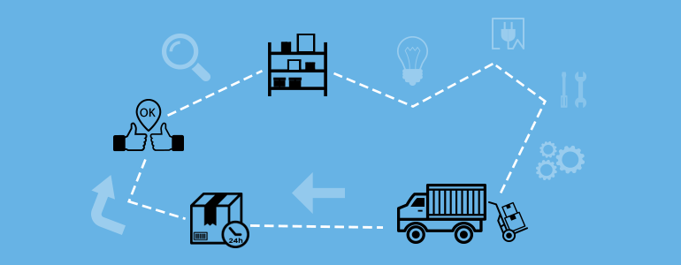

Servicios
A continuación detallamos nuestra multiplicidad de servicios.
Rastreo Satelital
Cuidamos su mercancía en transito y sus instalaciones, contamos con sistemas de control y video para monitorio.

Logística
Realizamos servicios de logística integral, para pequeñas, medianas y grandes empresas. Ofreciendo el apoyo técnico y tecnológico de acuerdo a cada necesidad, de esta forma podemos garantizar el manejo adecuado de sus mercancías.
Herramientas
Contamos con las siguientes herramientas para los distintos servicios ofrecidos. Camionetas y utilitarios: cerradas y o abiertas Camiones: chasis, semi remolques, escalonados, carretones (con distintas distribución de ejes, con o sin barandas y tipo Saider) Maquinarias: auto elevadores hasta 4,5 toneladas, camión con plancha hasta 7,5 toneladas, elevadores tipo tijera, generadores.

Distribución
La logística de distribución se relaciona con la función que permite el traslado de los productos finales (ya sean bienes o servicios) y los pone a disposición del cliente. El canal de distribución es el que posibilita que el usuario obtenga el producto en el lugar, tiempo y cantidades adecuadas. Nuestro compromiso es el cumplimiento y el asesoramiento para que no se interrumpa la cadena de suministros.
